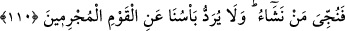

Ashabı:
–“Ölüler kimlerdir?” diye sorunca şöyle cevap verdi:
–“Dünyaya rağbet edenler ve onu sevenlerdir.”
Sahabeden birisi (r.a.) tabiûnun önde gelenlerinden birine şöyle dedi:
“Siz, Rasûlullah (s.a.)’in ashâbından daha çok amel ediyor, daha fazla gayret
gösteriyorsunuz. Fakat onlar sizden daha hayırlıdırlar.” “Peki bunun sebebi nedir?’ diye
sorulunca şöyle cevap verdi:
–“Çünkü onlar, dünyaya karşı sizden daha zâhid, âhirete karşı daha arzulu idiler.”
110. Nihâyet peygamberler ümitlerini yitirip de kendilerinin yalana
çıkarıldıklarını sandıkları sırada onlara yardımımız gelir ve dilediğimiz kimseler
kurtuluşa erdirilir. (Fakat) suçlular topluluğundan azabımız asla geri çevrilmez.
“Nihâyet peygamberler ümitlerini yitirip de” yâni inkârcıların ikbâl günlerinin
böyle devam edip gitmesi kendilerini aldatmasın. Çünkü daha öncekilere de belirli bir
süre tanınmıştı. Öyle ki peygamberler kendilerine dünyada verilecek destekten ya da bu
kâfirlerin îman edeceklerinden ümid kestiler. Çünkü onlar debdebe içerisinde şımarıp
azarak kendilerini bundan caydıracak birisi de olmaksızın mütemâdiyen küfre
dalmışlardır.
“Kendilerinin yalana çıkarıldıklarını sandıkları sırada onlara yardımımız” ansızın
hiç hesaplamadıkları bir şekilde “gelir” yâni inkarcılara verilen mühlet uzadıkça,
peygamberler dünyada kendilerine yardım edilmeyeceğini, zafer bahşedilmeyeceğini
zannederler. İşte o zaman ortada hiçbir alamet yokken yardımımız geliverir.
“Ve dilediğimiz kimseler” peygamberler ve onlara îman edip tâbi olanlar “kurtuluşa
erdirilir.” Allah’ın dilediği kimselerin kim olduğu, kurtulmaya lâyık olanların sadece
onlar olduğunu ve bu hususta hiçbir ortakları bulunmadığını göstermek amacıyla
sarâhaten zikredilmemiştir.
“Yalancı çıkarılan”, gerçeğe uygun olmayan bir söze muhâtap olarak hakkında yalan
haber verilen kimsedir. Yâni onlara nefisleri muzaffer olacaklarını söylediği zaman
nefislerinin kendilerine yalan söylediğini zannettiler.
İbn Abbas (r.anhümâ)’dan rivâyet edildiğine göre o şöyle demiştir: “Onlar zayıf
düşüp mağlûb olduklarında Allah’ın kendilerine vaad ettiği yardımı yapmayacağını
sandılar. Çünkü onlar da beşerdi.” Ardından şu âyeti okumuştur: “Onlar öyle
sarsıldılar ki nihâyet peygamber ve ona îman edenler: “Allah’ın yardımı ne zaman